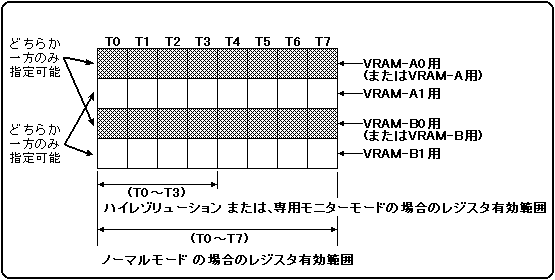
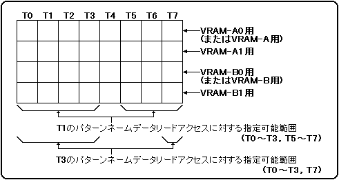

★
HARDWARE Manual★
VDP2ユーザーズマニュアル★
第３章 ＲＡＭ
★
HARDWARE Manual★
VDP2ユーザーズマニュアル★
第３章 ＲＡＭ
項目 | NBG0〜NBG3 | ||
|---|---|---|---|
縮小設定 | 1倍 | 1／2倍 | 1／4倍 |
1サイクル中に必要な | 1 | 2 | 4 |
図3.3 パタ−ンネ−ムテーブルデ−タのアクセス指定制限

項目 | NBG0〜NBG3 | |||||||
|---|---|---|---|---|---|---|---|---|
キャラクタ色数 | 16 | 256 | 2048 | 32768 | 1677万 | |||
縮小設定 | 1倍 | 1／2倍 | 1／4倍 | 1倍 | 1／2倍 | 1倍 | 1倍 | 1倍 |
1サイクル中に必要な | 1 | 2 | 4 | 2 | 4 | 4 | 4 | 8 |
項目 | TV画面モード | キャラクタサイズ | パターンネームテーブルデータのアクセスタイミング | |||||||
|---|---|---|---|---|---|---|---|---|---|---|
T0 | T1 | T2 | T3 | T4 | T5 | T6 | T7 | |||
キャラクタパター |
ノーマル |
横１セル×縦１セル |
T0〜T2， | T0〜T3， | T0〜T3， | T0〜T3， | T0〜T3 | T1〜T3 | T2，T3 | T3 |
ハイレゾリューション， |
横１セル×縦１セル |
T0〜T2 | T1〜T3 | T0， | T0，T1， | − | − | − | − | |
横２セル×縦２セル |
T0〜T2 | T1〜T3 | T2，T3 | T3 | − | − | − | − | ||
図3.4 キャラクタパタ−ンデ−タリードアクセス指定例

★HARDWARE Manual
VDP2ユーザーズマニュアル★
第３章 ＲＡＭ